Version 4.0.2 Tout ce que soung sait faire, pas à pas et en images.
Utiliser soung avec Internet
Le pas à pas en images, pour créer votre clé et passer la dictée et la lecture « avec Internet ». Comptez environ 15 minutes la première fois.
1. Les deux façons d’utiliser soung
soung lit vos textes à voix haute et écrit ce que vous dites. Il peut le faire de deux façons, que vous choisissez séparément pour la lecture et pour la dictée.
| Sans Internet | Avec Internet | |
|---|---|---|
| Prix | Gratuit | Payant, selon ce que vous utilisez (quelques centimes en général) |
| Vos textes et votre voix | Restent sur votre ordinateur | Passent par le service choisi (ici OpenAI) |
| La voix qui lit | Les voix de Windows | Une voix plus naturelle |
| La dictée | Écrit ce que vous dites | Écrit ce que vous dites et corrige les fautes, les « euh » et les répétitions |
| Ce qu’il faut | Rien | Une clé et du crédit (ce guide) |
2. Ce qu’il vous faut
- Une adresse e-mail (ou un compte Google, Microsoft ou Apple).
- Une carte bancaire, pour ajouter du crédit. Le minimum est de 5 dollars (environ 5 euros).
- soung installé et ouvert.
3. Créer votre clé sur le site d’OpenAI
1Ouvrez les paramètres de soung
Ouvrez la fenêtre de soung : appuyez sur Ctrl + Alt + V, ou cliquez sur l’icône de soung près de l’horloge, en bas à droite de l’écran.
- 3Cliquez sur Paramètres, en bas à gauche.
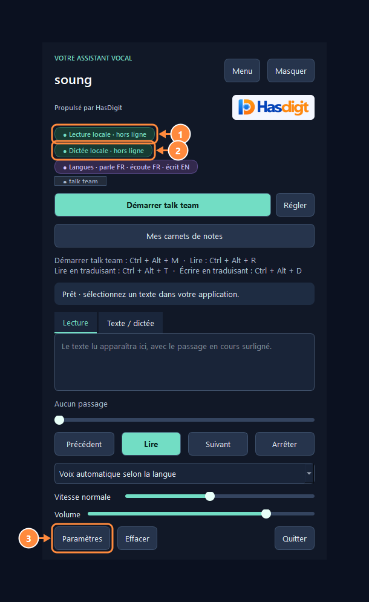
2Allez dans « Services en ligne » et cliquez sur « Créer ma clé »
- 1Dans la colonne de gauche, cliquez sur le menu Services en ligne.
- 2Dans la partie OpenAI, cliquez sur Créer ma clé ↗. Votre navigateur Internet s’ouvre directement sur la bonne page d’OpenAI.
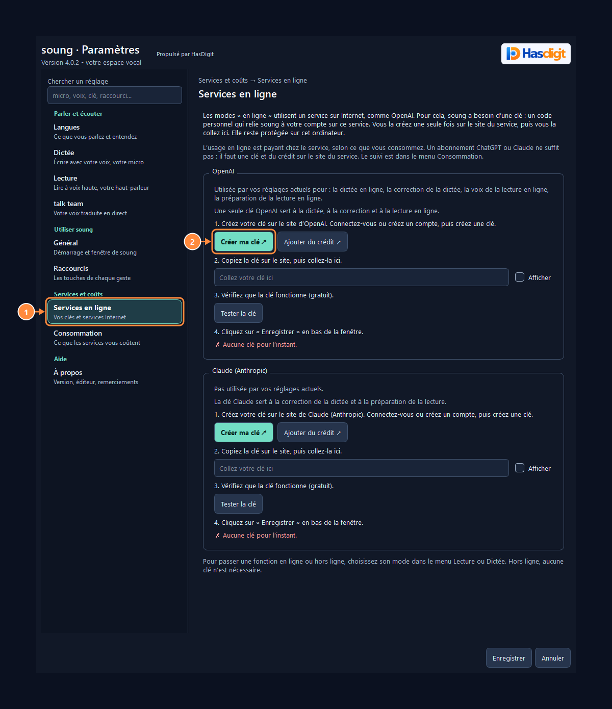
3Connectez-vous sur le site d’OpenAI
La page d’OpenAI est en anglais. Voici ce qu’il faut faire :
- 1Écrivez votre adresse e-mail dans la case Email address (« adresse e-mail »).
- 2Cliquez sur Continue (« Continuer »), puis suivez les étapes : mot de passe si vous avez déjà un compte OpenAI ou ChatGPT, ou création du compte si vous n’en avez pas.
- 3Ou plus simple : cliquez sur Continue with Google pour entrer avec votre compte Google.
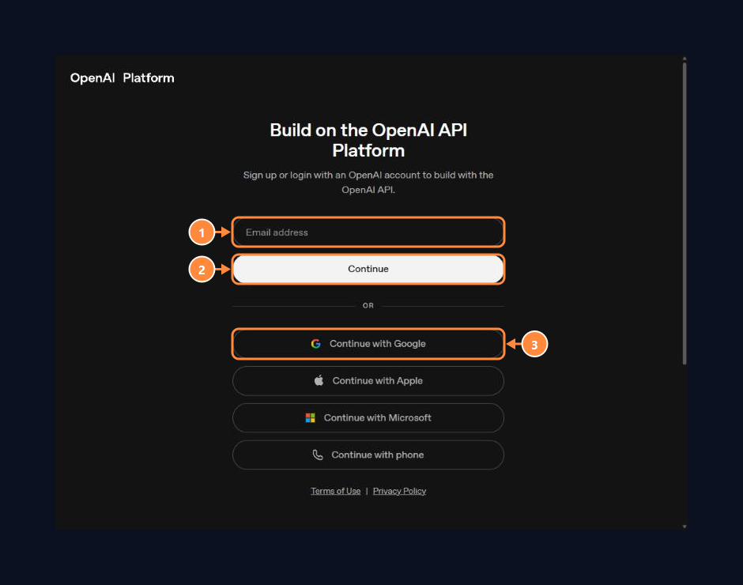
4Créez la clé
Une fois connecté, vous arrivez sur la page des clés (en anglais : « API keys »).
- 1Dans le menu à gauche, vous êtes sur API Keys (« Clés »).
- 2Cliquez en haut à droite sur + Create new secret key (« Créer une nouvelle clé secrète »).
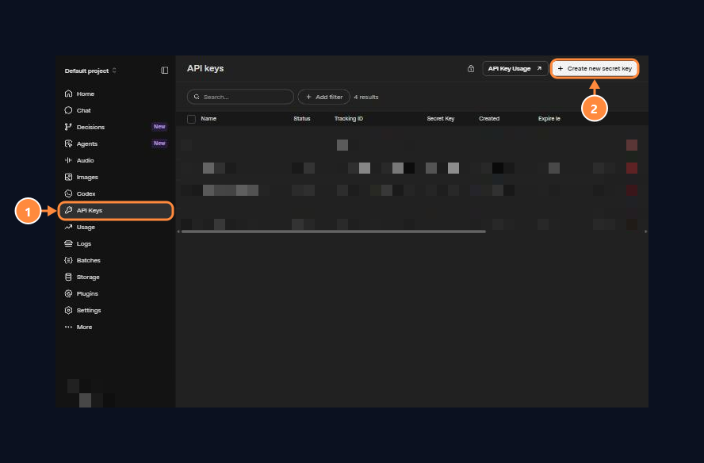
Une petite fenêtre s’ouvre :
- 1Dans Name (« Nom »), écrivez soung, pour vous souvenir à quoi sert cette clé.
- 2Dans Expiration (« Durée de validité »), choisissez une durée dans la liste. Quand la durée est passée, la clé ne marche plus : il suffit alors d’en créer une nouvelle. Laissez les autres cases telles quelles.
- 3Cliquez sur Create secret key (« Créer la clé »). Ce bouton devient cliquable une fois la durée choisie.
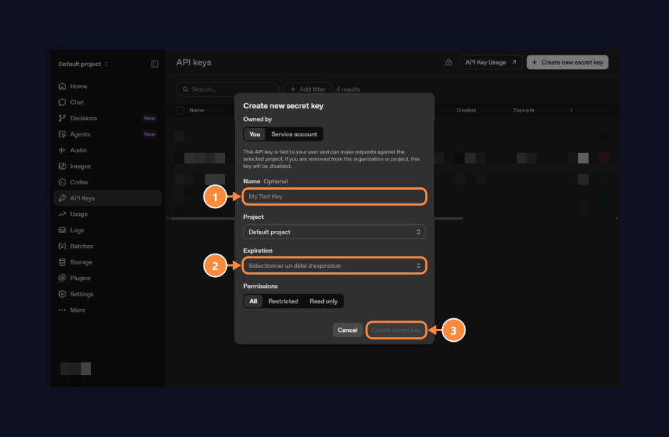
- 4La clé s’affiche : cliquez sur Copy (« Copier ») à côté d’elle. Elle commence par sk- et elle est très longue : c’est normal. Puis fermez la petite fenêtre.
4. Ajouter du crédit
5Mettez un peu d’argent sur votre compte OpenAI
Le service en ligne se paie à l’avance, comme une carte prépayée. Sans crédit, la clé ne marche pas. Dans soung, menu Services en ligne, cliquez sur Ajouter du crédit ↗ : la page de paiement d’OpenAI s’ouvre.
- 1Vous êtes dans Billing (« Paiement »).
- 2API credit balance : le crédit qu’il vous reste. (Il est flouté dans ce guide.)
- 3Auto-reload : la recharge automatique. « OFF » veut dire qu’elle est coupée : rien n’est prélevé sans vous. Quand le crédit arrive à zéro, le mode en ligne s’arrête simplement, jusqu’à votre prochain achat.
- 4Cliquez sur Buy credits (« Acheter du crédit »), ajoutez votre carte bancaire si on vous la demande, choisissez un montant (5 dollars suffisent pour commencer), puis validez.
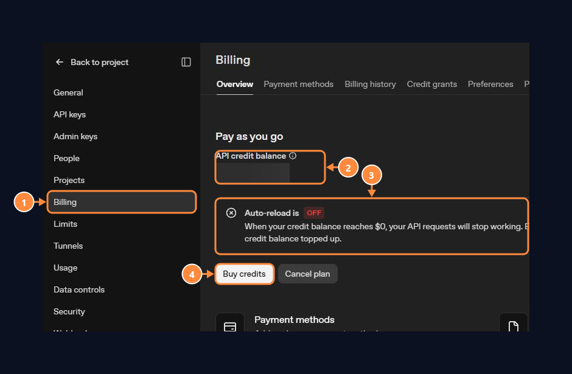
5. Mettre la clé dans soung
6Collez la clé, testez-la, enregistrez
Revenez dans soung, menu Services en ligne, partie OpenAI.
- 1Cliquez dans la case « Collez votre clé ici », puis appuyez sur Ctrl + V pour coller. Des points s’affichent à la place de la clé : c’est voulu, pour la protéger. Cochez « Afficher » si vous voulez la voir.
- 2Cliquez sur Tester la clé. C’est gratuit.
- 3Cliquez sur Enregistrer, en bas de la fenêtre.
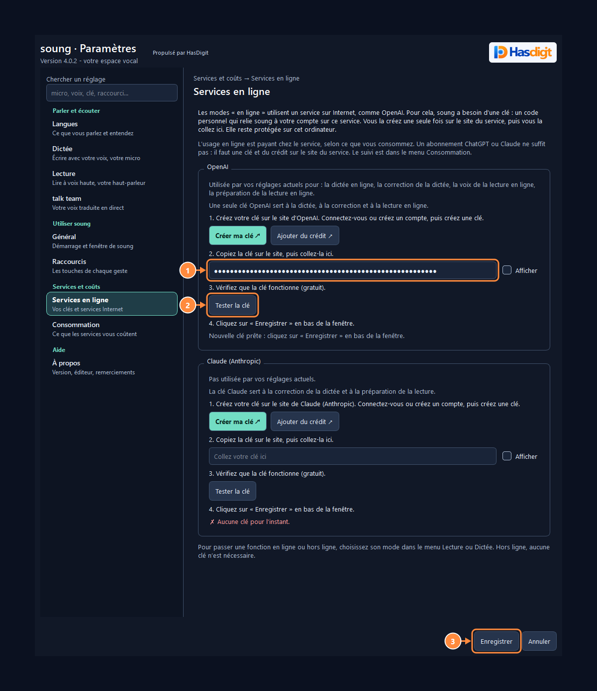
Quand la clé fonctionne, soung l’écrit en vert :
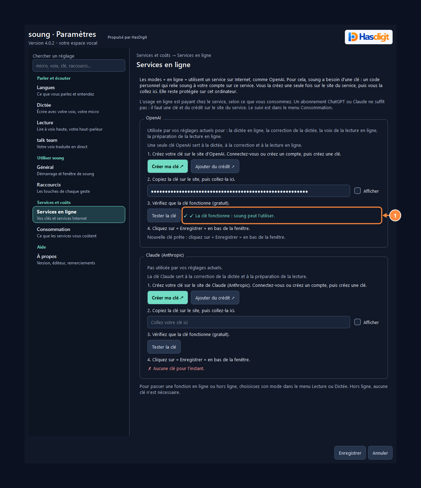
6. Passer la dictée et la lecture « avec Internet »
Avoir une clé ne change rien tout seul : choisissez maintenant quelles fonctions utilisent Internet.
7La dictée avec Internet
- 1Dans la colonne de gauche, cliquez sur le menu Dictée.
- 2Dans « Mode de dictée », choisissez En ligne - OpenAI.
- 3soung vous rappelle la clé utilisée. « ✓ enregistrée » : tout est prêt. « à ajouter » : cliquez sur Gérer mes clés et reprenez l’étape 6.
- 4« Service de correction » : laissez OpenAI.
- 5Cliquez sur Enregistrer. soung vérifie que tout marche avant d’enregistrer.
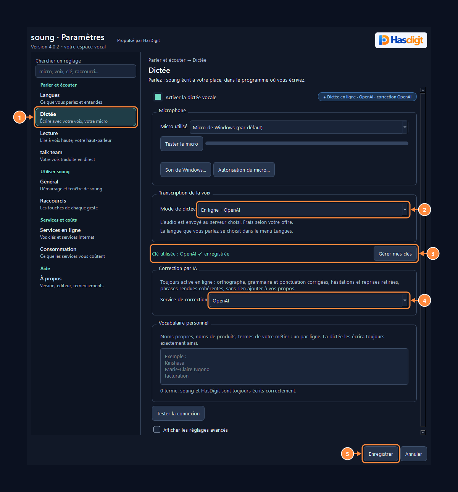
8La lecture avec Internet
- 1Dans la colonne de gauche, cliquez sur le menu Lecture.
- 2Choisissez Lecture en ligne : voix naturelle, texte préparé par IA.
- 3« Voix » : laissez Voix en ligne OpenAI.
- 4Vérifiez la ligne « Clé utilisée : OpenAI ✓ enregistrée ».
- 5Cliquez sur Enregistrer.
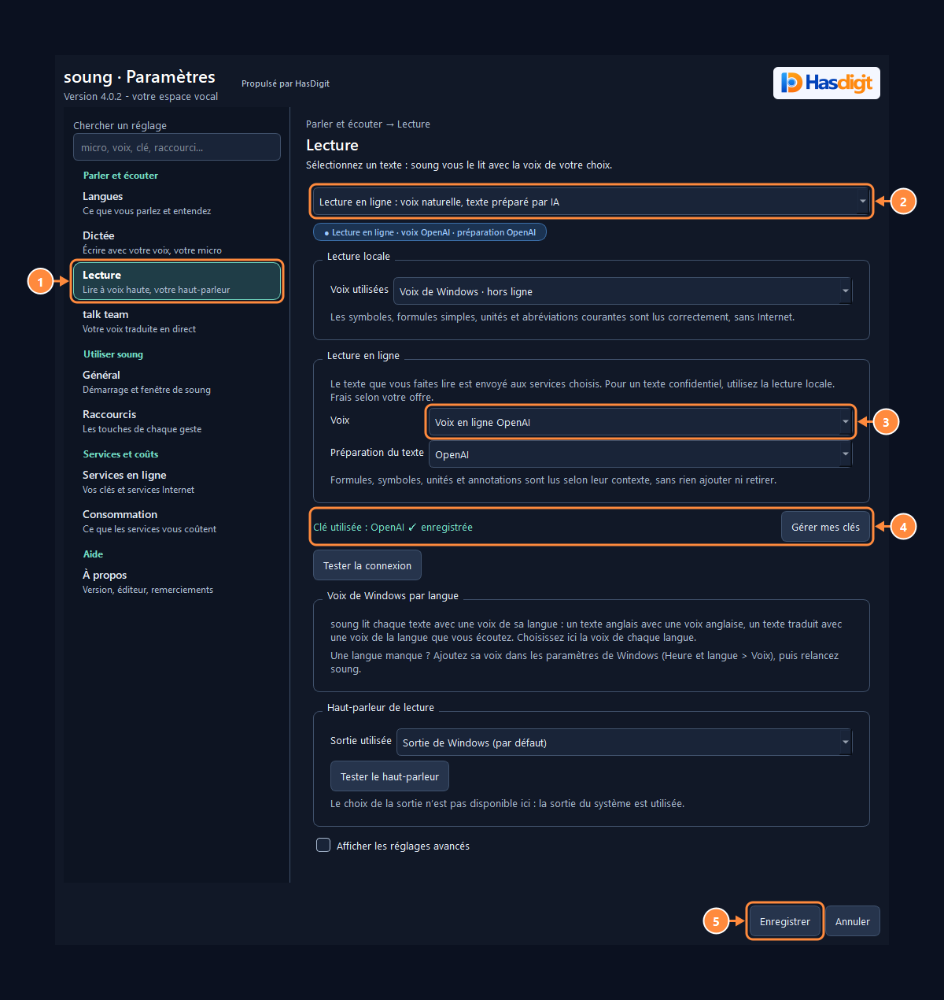
9Vérifiez d’un coup d’œil
Dans la fenêtre de soung, deux étiquettes indiquent toujours le mode choisi :
- 1la lecture : « Lecture en ligne » ;
- 2la dictée : « Dictée en ligne ».
Cliquer sur une étiquette ouvre directement le bon réglage.
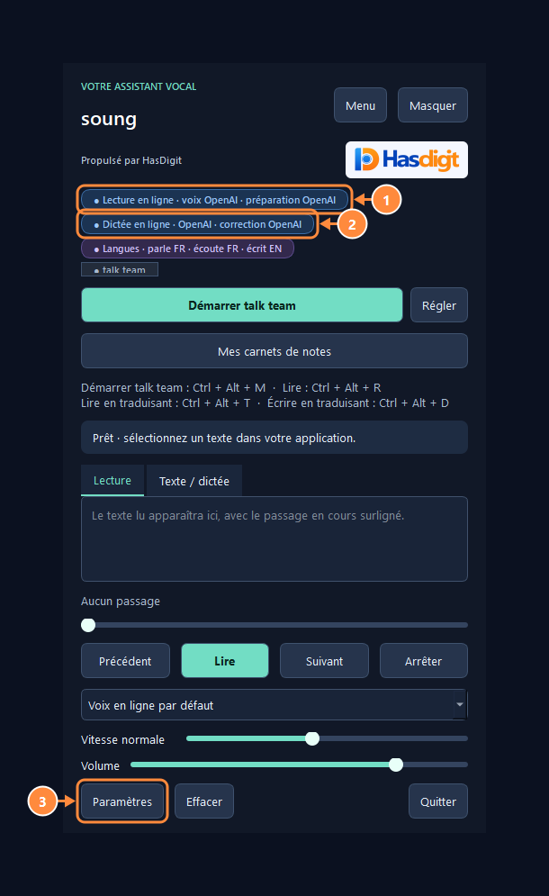
7. Revenir « sans Internet »
Pour un texte confidentiel, pour ne rien dépenser, ou quand Internet ne marche pas, repassez une fonction sans Internet. Votre clé reste enregistrée pour plus tard.
10La dictée sans Internet
- 1Dans la colonne de gauche, menu Dictée, « Mode de dictée » : choisissez Local - soung (hors ligne).
- 2La toute première fois seulement, cliquez sur Préparer / vérifier le mode hors ligne.
- 3Cliquez sur Enregistrer.
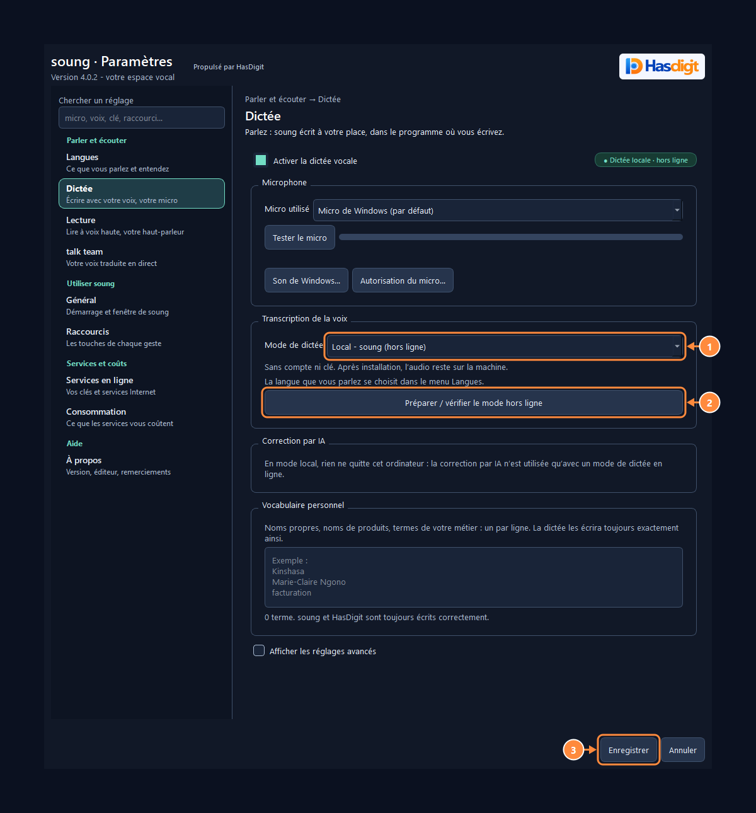
11La lecture sans Internet
- 1Dans la colonne de gauche, menu Lecture : choisissez Lecture locale : voix de Windows, sans Internet.
- 2Cliquez sur Enregistrer.
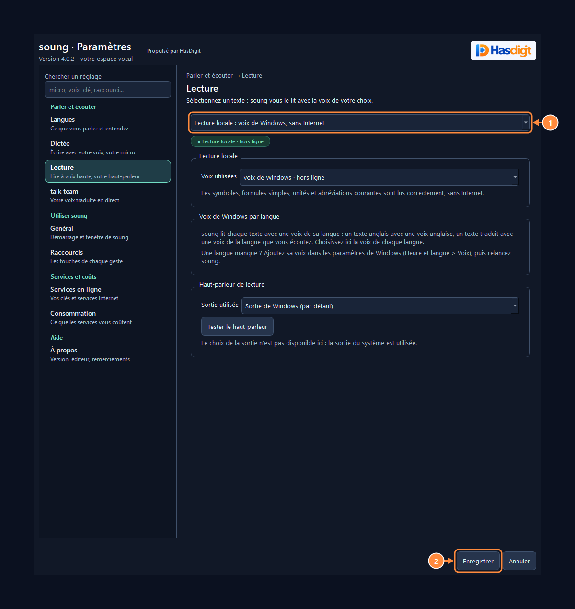
Les étiquettes de la fenêtre de soung redeviennent vertes : « Lecture locale · hors ligne » et « Dictée locale · hors ligne ».
8. Suivre ce que vous dépensez
12Le menu Consommation
- 1Dans la colonne de gauche, cliquez sur le menu Consommation.
- 2Choisissez la période : aujourd’hui, 7 derniers jours, ce mois…
- 3Lisez le total : les jetons utilisés et le coût estimé.
- 4Le tableau « Par activité » dit ce que chaque fonction a utilisé : dictée, lecture, talk team, rapports des carnets.
soung affiche ce que vous avez utilisé et une estimation du prix. Le montant exact reste celui affiché sur le site d’OpenAI.
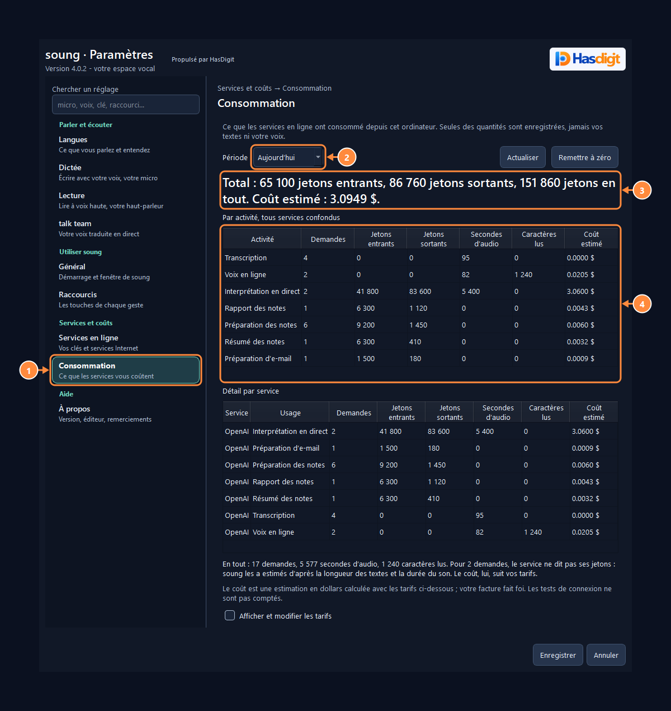
9. Si quelque chose ne marche pas
- « La clé a été refusée »
- La clé a été mal collée ou supprimée sur le site d’OpenAI. Créez-en une nouvelle (étape 4) et collez-la (étape 6). Cochez « Afficher » pour vérifier qu’elle est complète.
- « Crédit ou limite du service atteint »
- Votre crédit OpenAI est épuisé. Ajoutez du crédit (étape 5). En attendant, passez la fonction sans Internet (partie 7).
- « Problème de connexion Internet »
- Vérifiez votre connexion. Rien n’est perdu : pour une dictée, cliquez sur Réessayer quand Internet revient, sans redicter.
- J’ai perdu ma clé ou je l’ai fermée trop vite
- Ce n’est pas grave : créez une nouvelle clé sur le site d’OpenAI et collez-la dans soung.
- Ma clé est-elle en sécurité ?
- Oui. soung la range dans le coffre protégé de Windows et ne l’affiche plus jamais. Ne la donnez à personne et ne l’envoyez pas par e-mail.
- Comment arrêter de payer ?
- Repassez la lecture et la dictée sans Internet (partie 7). Sans utilisation, rien n’est dépensé. Vous pouvez aussi supprimer la clé : cochez « Supprimer cette clé », puis Enregistrer.